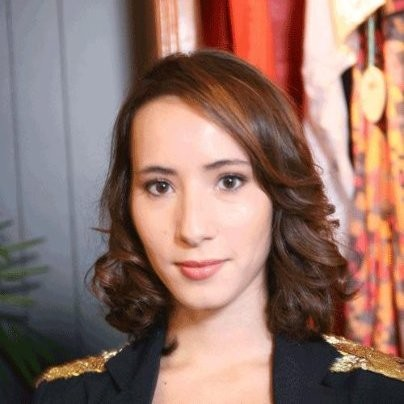

Karin Aït-Si-Amer
Senior SRE & DevOps · Montpellier (Full Remote)
J'accompagne les sociétés et leurs équipes dans leurs enjeux de montée en charge — qu'il s'agisse d'infrastructure, de scalabilité ou d'automatisation — sur AWS, GCP, Cloud hybride ou on-premise.
Spécialisée Kubernetes et son écosystème, j'interviens sur l'ensemble de la chaîne DevOps : du CI/CD à l'observabilité, en passant par la sécurité, l'expérience développeur et le FinOps.
J'aime travailler en proximité avec les équipes produit et tech, avec un soin particulier pour le transfert de compétences et la documentation — surtout quand elle est générée par le code — pour que chaque intervention laisse l'équipe plus autonome qu'à mon arrivée. Je dispense également des formations sur Docker, Kubernetes et l'Infrastructure as Code.
Sujets de prédilection
- Expérience développeur
- Observabilité & monitoring
- Architecture Cloud
- CI/CD & automatisation
- DevSecOps
- FinOps
Co-fondatrice et CTO d'une application de recettes de cuisine. Pilotage de l'ensemble de la stack technique : infrastructure AWS (ECS, RDS PostgreSQL, Load Balancer), monitoring Grafana, développement de l'API, du backoffice et d'un serveur MCP. Responsable également de la stratégie data et du business plan.
Migration d'un service legacy hébergé sur VM (configuré manuellement) vers une infrastructure AWS ECS conteneurisée, avec environnements staging et production, Load Balancer, et pipeline CI/CD GitLab incluant des tests automatisés.
Audit de sécurité, analyse de conformité et mise en place d'un plan de remédiation en vue de l'obtention de la certification ISO 27001. Certification obtenue à l'issue de la mission.
Focus Developer Experience au sein d'une équipe DevOps de 5 personnes sur une infrastructure GCP à grande échelle (80M+ utilisateurs). Mise en place d'un cluster Kubernetes dédié au provisioning de l'ensemble de l'infrastructure cloud — autres clusters, services GCP, environnements — via Config Connector : une approche 100% Kubernetes-native, sans Terraform. Les ressources Config Connector sont réconciliées en continu par Argo, garantissant un état d'infrastructure toujours aligné avec le dépôt Git. Les équipes de développement consomment l'infrastructure via de simples manifestes YAML, sans dépendance aux outils IaC traditionnels. Astreintes en production.
Management d'une équipe de 5 ingénieurs SRE : recrutement, encadrement, astreinte en journée, roadmap et OKRs. 1-to-1s réguliers, communication transverse avec les équipes produit et engineering.
Conception et gestion d'une infrastructure multi-cloud (3 providers, multi-régions). Clusters Ceph S3 pour la VOD, CephFS pour le live streaming, PostgreSQL, RabbitMQ. SLI/SLO sur Prometheus/Grafana. Outillage complet via Terraform, Ansible, GitLab CI.
Administration de 2000+ machines (2 datacenters parisiens + POPs). Industrialisation de la CI/CD corporate. Installation et administration de clusters Kubernetes on-premise et GKE. Étude des solutions de sécurisation Kubernetes.
Programme Cloud & Automation sur le stream PaaS. MVC DataLake autour des technologies Big Data. Animation du comité hebdomadaire d'architecture (première instance de validation avant comité budgétaire).
Projet RIO : migration de 350 applications, suppression de 1300 équipements, migration de 7500 flux CFT (dont paiements) vers 4 datacenters CACIB.